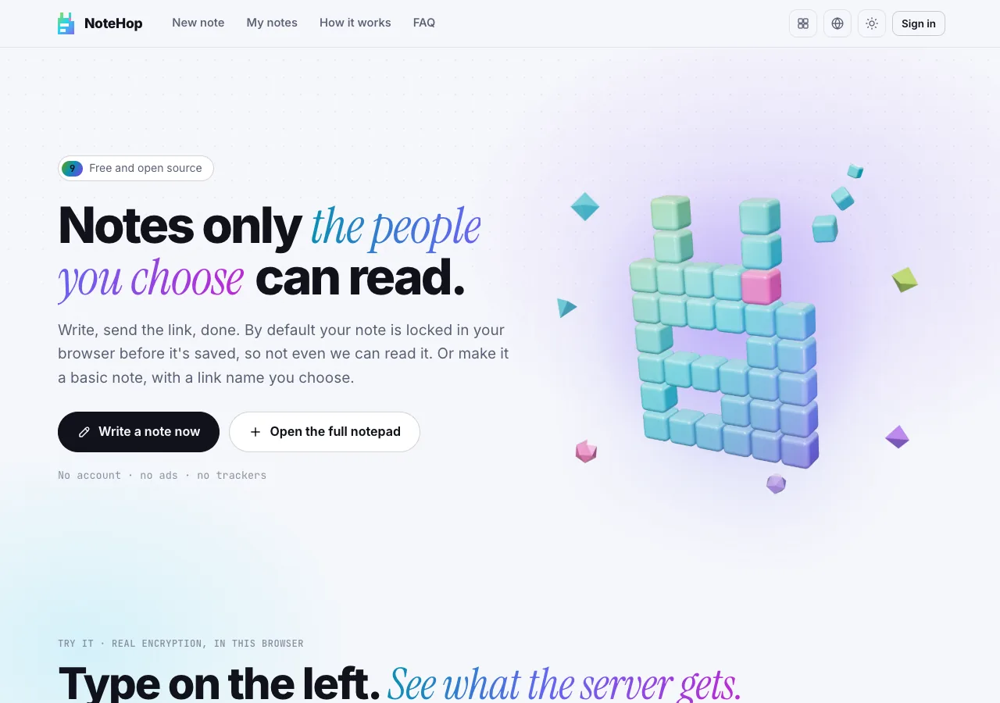
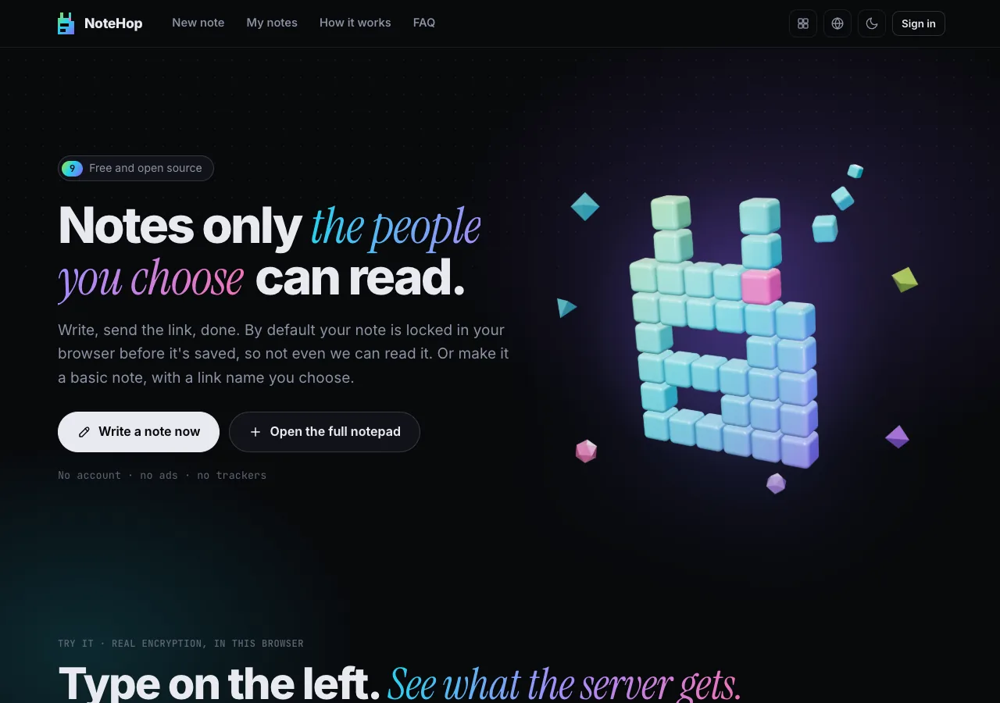

HOP · Encrypted notes & docs
Locked in your browser, shared in seconds
By default, NoteHop encrypts your note in your browser with AES-256-GCM before it leaves your device. The key lives in the URL fragment (#), so the server cannot read an encrypted note. A basic note, which the server can read, gets a link name you choose. Short links at n.hel.ink, open source (MIT).
Live addresses in this page link to the HOP family’s public sites.
What NoteHop does
- Client-side AES-256-GCM
Your browser encrypts the content before saving. The decryption key travels in the link fragment (#) and is never sent to the server.
- A server that cannot read encrypted notes
For an encrypted note the server stores only ciphertext, so operators and database dumps cannot read its title or text. Basic notes are stored as plain text and are marked as basic.
- Self-destruct & burn on read
Notes can delete themselves immediately after being read once, or expire automatically after 10 minutes, 1 hour, 1 day, or 30 days.
- Granular permissions per link
Issue different links for the same note: owner, read-only, can-write, reply-only, or tick-only for checklists.
- Live collaborative editing
Write together in real time through a WebSocket relay. In an encrypted note, everything the relay passes along is encrypted.
- Rich note types
Markdown text, interactive checklists, polls, forms, syntax-highlighted code notes, and sandboxed web notes.
- One sign-in for every app: HOP ID
Sign in seamlessly with your unified HOP ID account across the entire HOP family, or use NoteHop anonymously as a guest.
- Single Go binary self-hosting
One Go executable of about 20 MB with SQLite built in, nothing else to install, and a one-command installer.
Run your own
Live addresses in this page link to the HOP family’s public sites.
NoteHop


FAQ
Can the server or hosting provider read my notes?
Not an encrypted note. Your browser encrypts it with Web Crypto AES-256-GCM before it is sent, and the key stays in the URL hash (#), which browsers do not send to a server. A basic note is not encrypted, and the server can read it.
What happens if I lose the link to my note?
For an encrypted note, nobody can recover it. NoteHop has no master key and no backdoor, so the link is the only way in. A basic note can be found again by its link name.
Can I host NoteHop on my own server?
Yes. NoteHop compiles into a single standalone Go binary with zero external dependencies. See the repository README for setup instructions.
Where do I report security vulnerabilities or bugs?
Please do not open a public issue for a vulnerability. Report it privately through GitHub: open the repository's Security tab and choose Report a vulnerability. SECURITY.md has the details.
The HOP family
NoteHop is part of HOP, a lightweight suite of focused, self-hostable tools sharing a unified sign-in.
| App | What it does | Live service | Source code |
|---|---|---|---|
| HOP ID | Single sign-on, account center & security hub | hel.ink · hub.hel.ink | navi-crwn/HEL.ink |
| LinkHop | Fast, privacy-friendly URL shortener with analytics | link.hel.ink · hel.ink/l/{slug} | navi-crwn/LinkHop |
| BioHop | Lightweight link-in-bio pages with QR and themes | bio.hel.ink · hel.ink/b/{slug} | navi-crwn/BioHop |
| PixelHop | Fast, private image hosting and photo studio | pixel.hel.ink · p.hel.ink | navi-crwn/PixelHop |
| NoteHop | End-to-end encrypted notes with self-destruct | note.hel.ink · n.hel.ink | navi-crwn/NoteHop (this repo) |
| FileHop | Convert files in your browser; nothing is uploaded | file.hel.ink | navi-crwn/FileHop |
| PayHop | Make a payment QR and split a bill; nothing leaves your browser | pay.hel.ink | navi-crwn/PayHop |
Need help or found an issue?
Questions, suggestions, and bug reports are welcome on our GitHub issue tracker .